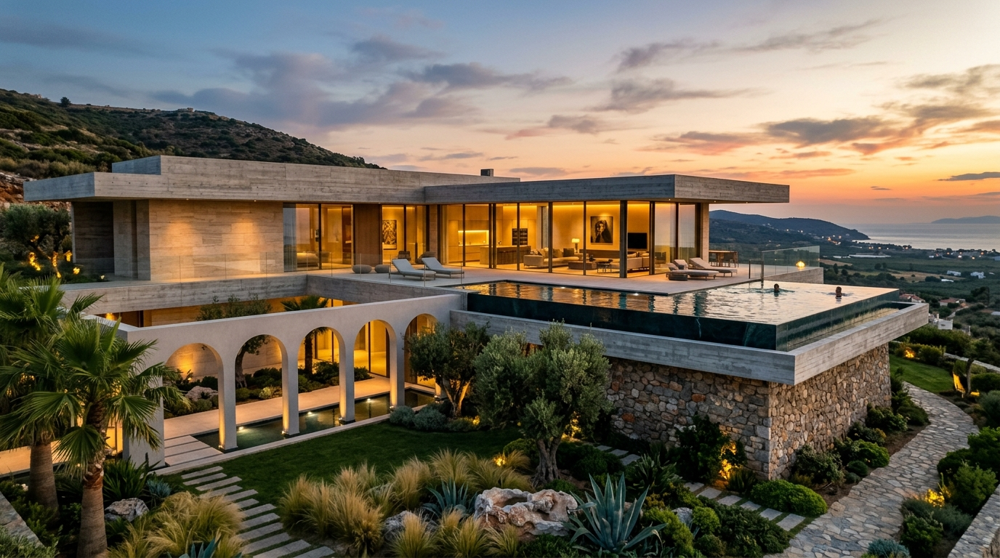
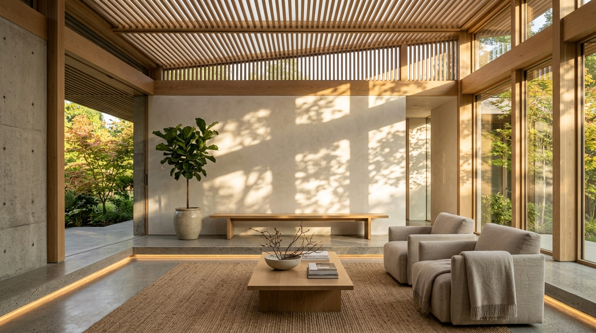
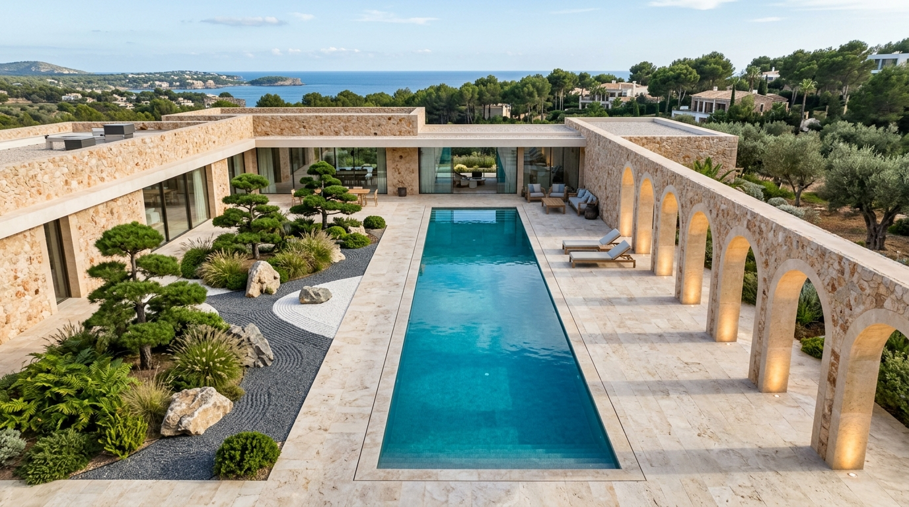
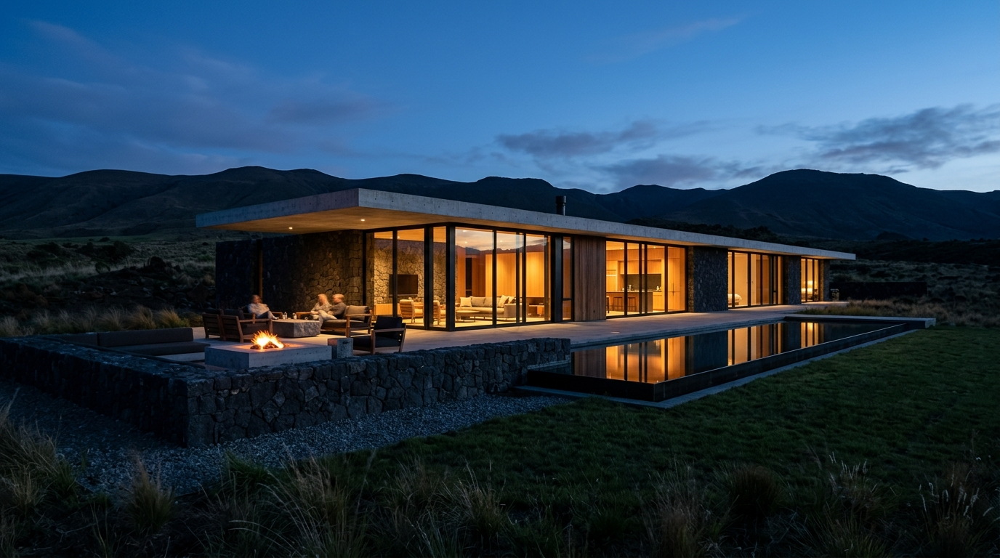
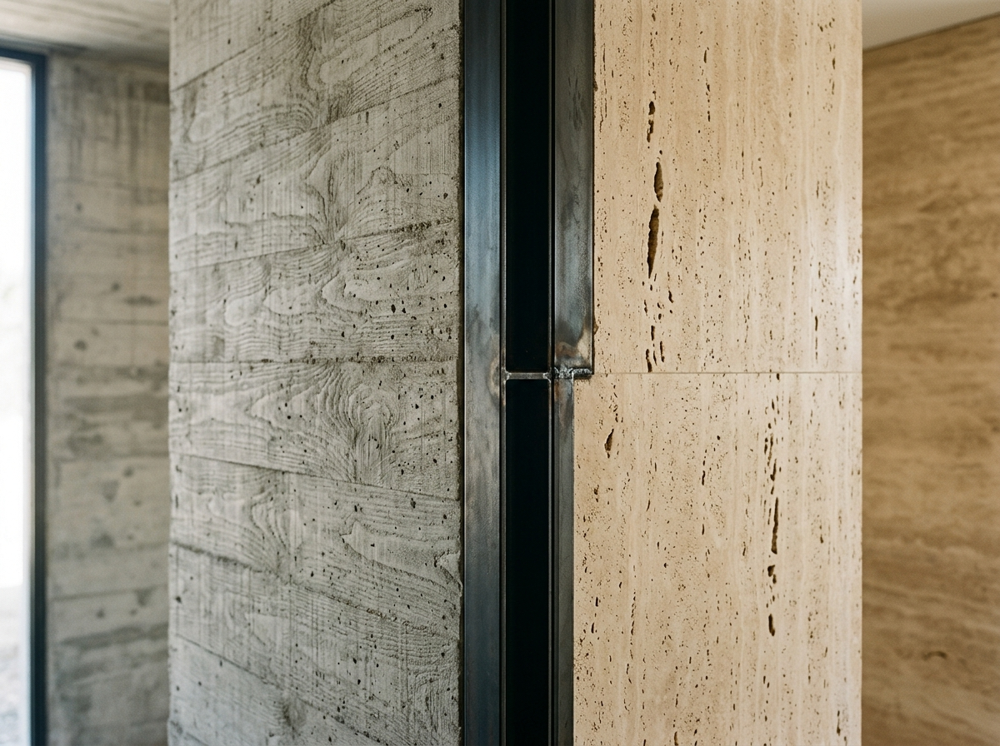

View
Kerala Coastal Cliff
·
Cantilevered Glass Pool & Arched Colonnade
An architectural design practice led by Abin Thomas. We craft bespoke living monuments that dialogue with the land, sculpted from pure light, tectonic stone, and fearless imagination.
PRACTICE BASED IN KERALA, INDIA
STUDIOS: CALICUT · KATTAPPANA · THIRUVANANTHAPURAM
COMMISSIONS ACROSS ALL KERALA

Rooted in centuries of classical craft, our studio progresses through three fundamental stages on every commission.
This initial stage focuses on learning and mastering the fundamentals. We begin with profound respect for structural physics, solar geometry, material load tolerances, and classical architectural proportions.
Exploring possibilities & innovative solutions, experimenting with new approaches. Once fundamentals are mastered, we push boundaries—daring cantilevers, breaking conventional thresholds between indoor and nature, and contrasting raw stone with ethereal glass.
Transcend conventional thinking and create truly original and innovative designs. Free from dogma, the building ceases to be a mere structure and transforms into an enduring sanctuary of light, silence, and human transcendence.
shu.ha.ri — where we learn from experiences, experiment on executions and transcend your expectations.
Here, architectural excellence meets bold imagination resulting in bespoke, unparalleled designs.
Each project is approached with dedication to detail, ensuring every element—down to the final stone—reflects excellence and intent. This is where form meets function, and vision becomes reality.

Tuned for natural daylight, oak joinery & lime-wash silence.
"We don't impose buildings upon the earth. We study the soil, understand the climate, and craft honest architecture where form meets function, and vision becomes reality."
Leading the practice from Calicut, Abin Thomas approaches each commission with rigorous devotion to the philosophy of Shu-Ha-Ri. Under his direction, the studio undertakes bespoke residences and experimental pavilions across all districts of Kerala, focusing on spatial purity, tropical ventilation, and tactile stone masonry.
From cliffside infinity residences to introverted courtyard sanctuaries, every project is treated as an individual piece of architectural art—crafted down to the final stone.



We execute holistic architecture where structure, interiors, landscape, and bespoke objects converge into a unified poetic entity.
Rigorous topographical analysis, solar path orchestration, and structural engineering. We shape low-profile silhouettes that integrate seamlessly into pristine natural landscapes.
Crafting tactile interior sanctuaries. Seamless floor recesses, concealed atmospheric lighting, and hand-troweled lime-wash surfaces that celebrate the slow passage of shadow.
Blurring the line between the built habitat and the lush Kerala landscape. Reflecting pools, natural breeze corridors, and indigenous flora framed by monumental arched colonnades.
Commissioned monolithic stone hearths, custom architectural brass hardware, and bespoke oak joinery designed exclusively for each residence.
We reject artificial veneers. Our architecture is composed of authentic geologic materials that weather with dignity and age into timeless beauty.
Porous Geologic Vein
Artisanal Cedar Grain Formwork
Precision-Milled Structural Timber
Regional Bedrock Masonry
Tivoli Quarries / Architectural Masonry
Warm, porous limestone cut along the vein. Its tactile micro-cavities celebrate organic geologic time while providing cool thermal mass.
Headquartered in Calicut, we undertake commissions across all districts of Kerala. We limit our active projects to ensure uncompromising dedication down to the final stone.
CWRDM Road, Chevarambalam,
Calicut (Kozhikode), Kerala, India
Kattappana · Thiruvananthapuram
Works Undertaken Across All Kerala
Thank you. Abin Thomas and the studio team will review your site aspirations and initiate direct contact within 24 hours.